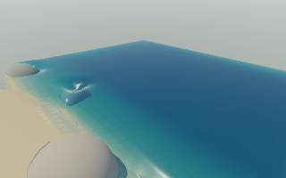

Two combined GPU comparisons improved complete-frame FPS and simulation throughput by 8–13%. Physics work fell 13–16%; p95 frame work fell 20–25%. The CPU-only change reduced physics work 8%, but FPS remained flat. These are bounded measurements on this Mac, not predictions for a full-size window or the RTX machine.
Same faithful beach renderer and physics, 320 × 200 pixels, 1,164 water markers, 3,553 pressure cells, three boulders, wind 24, rain off, organic load zero; AMD GCN-4 WebGPU. Each comparison uses reference/optimized/optimized/reference order, 12 warm-up and 48 measured frames per block. FPS includes completed GPU drawing and animation-frame scheduling; realtime is simulated time divided by elapsed wall time. Every frame advances one fixed 1/15-second step. The normal page may schedule differently; no catch-up steps or adaptive resolution were used here. Timestamp collection is enabled on both sides.
| Comparison | Path | FPS | Realtime | Mean physics ms | p95 frame work ms |
|---|---|---|---|---|---|
| CPU topology only | Reference | 8.08 | 0.539× | 39.61 | 146.0 |
| CPU topology only | Optimized | 8.05 | 0.537× | 36.51 | 153.9 |
| Connected GPU, combined run 1 | Reference | 8.74 | 0.583× | 52.64 | 159.8 |
| Connected GPU, combined run 1 | Optimized | 9.85 | 0.656× | 44.08 | 128.3 |
| Connected GPU, combined run 2 | Reference | 9.55 | 0.637× | 47.87 | 141.1 |
| Connected GPU, combined run 2 | Optimized | 10.35 | 0.690× | 41.48 | 106.0 |
Frame-work percentiles exclude the subsequent animation-frame wait; FPS and realtime include it. The early shorter isolated GPU test reduced physics cost but lost total FPS (8.28 → 7.89). This prompted longer combined tests; all raw results are retained below. The tests do not establish how much of the combined gain is attributable to each optimization independently.
Accepted unique GPU timestamp samples show mean pressure execution of 13.40 → 9.00 ms and 10.72 → 7.74 ms in the two longer runs (33% and 28% less). Impossible timestamp spans are rejected by the existing timer; wall-clock frame results remain the primary evidence. The isolated CPU topology benchmark improves 8.18 → 2.48 ms per rebuild across 60 moving phase masks; this microbenchmark is not a 70% full-scene gain.
tests/rtx-profile.test.js:81 expects the old startup backend expression and fails on unchanged HEAD too. Historical tests were not rewritten.Rendering code is unchanged. The completed preview was visually inspected; no new image-difference proof is claimed for the slightly different GPU floating-point trajectory. CPU grid construction remains exact. Sand, rigid bodies, field preparation and scalar work still use the CPU; this is not a fully GPU-resident engine.

Authoritative GPU water state still has the greatest structural potential because full-state readback and CPU preparation remain. Fine-grid multi-workgroup execution is untested; its additional dispatch/reduction cost needs measurement. Opaque tracing, density reconstruction and medium lighting remain rendering leads. The backlog now includes a staged native wgpu host experiment that shares WGSL and resource layouts across Metal, DirectX 12 and Vulkan, keeps the browser and CPU reference, and requires image/numerical/complete-frame evidence before a full native migration.
Development backlog · Bounded experiment controls · Official wgpu platform support